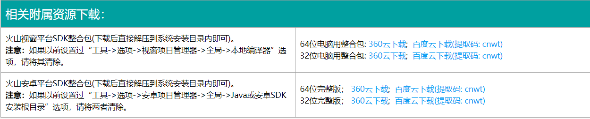
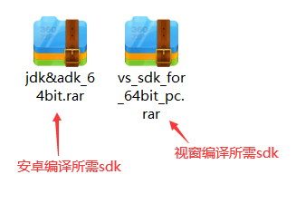
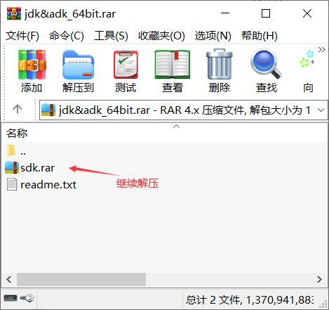
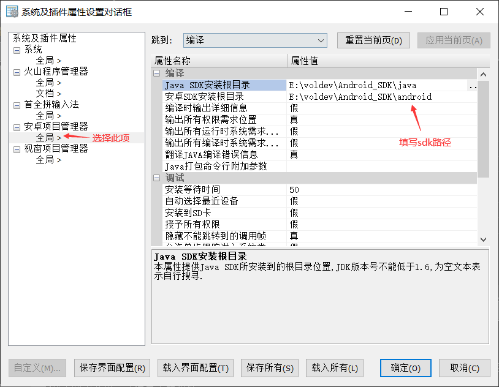
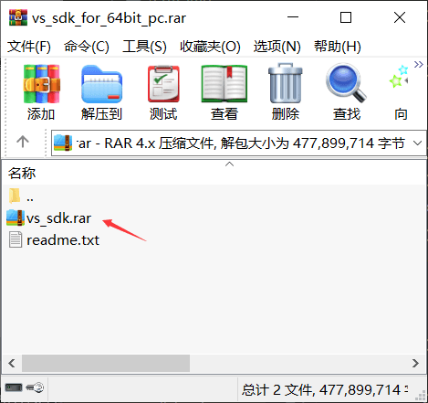
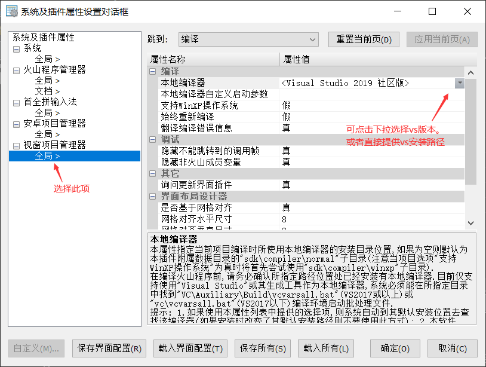

在火山官网下载并安卓火山平台后并不能直接进行软件调试编译等工作，需要配置对应编译环境的sdk才能可以。
注：火山官网中的火山为免费版，个人版用户在购买火山后，收到加密狗后会附带一个卡片，在卡片的背面印有个人版的下载地址。
如下图所示：
在官网中，可以看到“相关附属资源下载”栏目，此栏目中提供了火山视窗和火山安卓编译所需要的sdk包，下载自己所需要的即可。

如下图为64位sdk下载后：

1、安卓平台
打开安卓平台所提供的sdk压缩包，会在压缩包中看到一个“sdk.rar”的文件夹，继续打开此压缩包会看到一个“plugins”文件夹，将这个文件夹解压到火山平台的安装路径即可。

如果是自行下载的安卓和java的sdk，点击“工具->选项”菜单进入系统设置，选择“安卓项目管理器”分别设置“java sdk安装根目录”和“安卓sdk安装根目录”即可进行程序调试和编译发布版。

2、视窗平台
视窗平台的配置和安卓基本一致，打开下载好的sdk压缩包后，会看到一个“vs_sdk.rar”的压缩包，继续打开此压缩包会看到一个“plugins”文件夹，将这个文件夹解压到火山平台的安装路径即可。

如果是自行下载的vs编译器，点击“工具->选项”菜单进入系统设置，选择“视窗项目管理器”，设置“本地编译器”版本，如果未能识别到，可以直接提供VS编译器路径。
